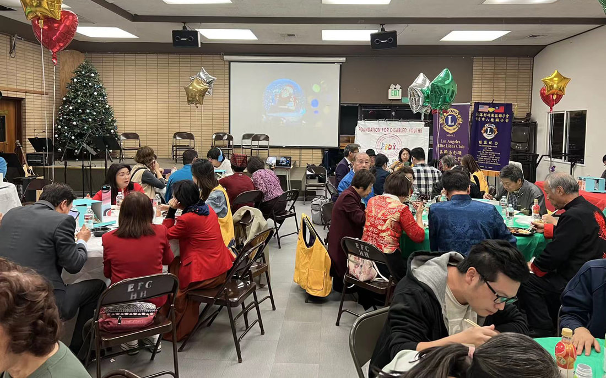

A grassroots community built by parents, powered by volunteers, and dedicated to the I/DD community since 2004.
The Foundation for Disabled Youths (FFDY) was established in June 2004 in San Gabriel, California, by a group of parents and concerned community members who recognized a need for dedicated support and enrichment programs for individuals with intellectual and developmental disabilities (I/DD).
What started as a small gathering of families has grown into a thriving nonprofit serving over 50 families across communities including Cerritos, Glendora, San Gabriel, Walnut, Rowland Heights, Diamond Bar, Whittier, and Fullerton — with more than 60 dedicated volunteers supporting our programs each year.
"Every person deserves to live their best possible life — full of opportunity, connection, and belonging."

To provide a platform for the intellectually and developmentally delayed (I/DD) community to thrive — empowering individuals to live their best possible lives through social recreation, skills development, and community connection.
We envision a future where individuals with disabilities are fully included as valued, contributing members of our society — and where every family has the knowledge, support, and resources they need to thrive.
Established in San Gabriel, CA, by parents and advocates passionate about supporting the I/DD community.
Launched weekly art, music, and movement classes, growing membership and volunteer base significantly.
Added adaptive taekwondo, horseback riding, animal therapy, and cooking classes to our program lineup.
Began producing video content to share our community's stories and expand awareness.
Navigated challenges and continued serving families with adapted programs to keep our community connected.
Serving 50+ families with 60+ volunteers, running weekly programs, and working toward a permanent facility.
Establish a dedicated facility for year-round programming and community gatherings.
Launch vocational programs to help members build real-world employment skills and independence.
Serve as a central hub of information, training, and referrals for the I/DD community.
Grow our membership and partner with more communities across Southern California.
Cultivate emerging leaders within the I/DD community to shape their own future.
Whether you donate, volunteer, or simply spread the word — you help us give more individuals the chance to thrive.